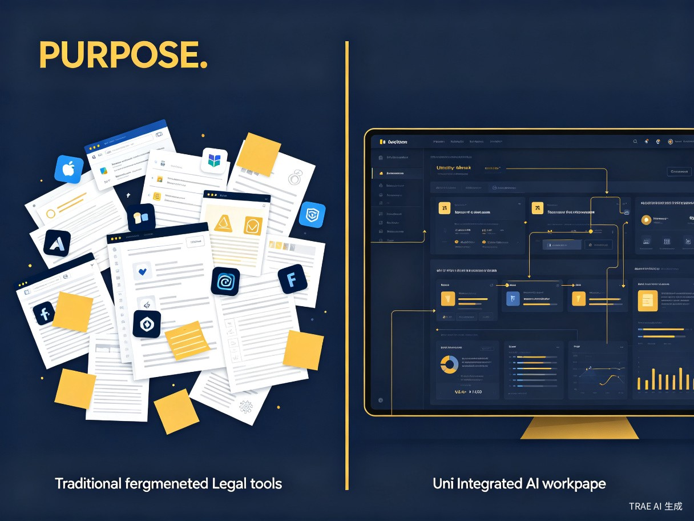
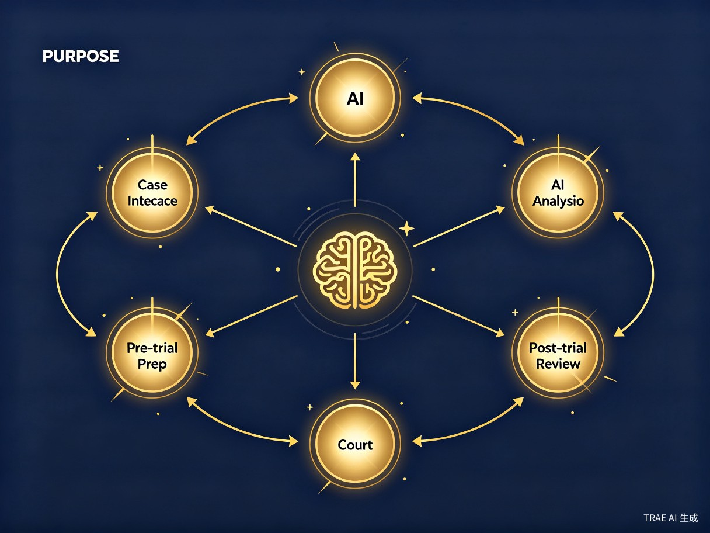
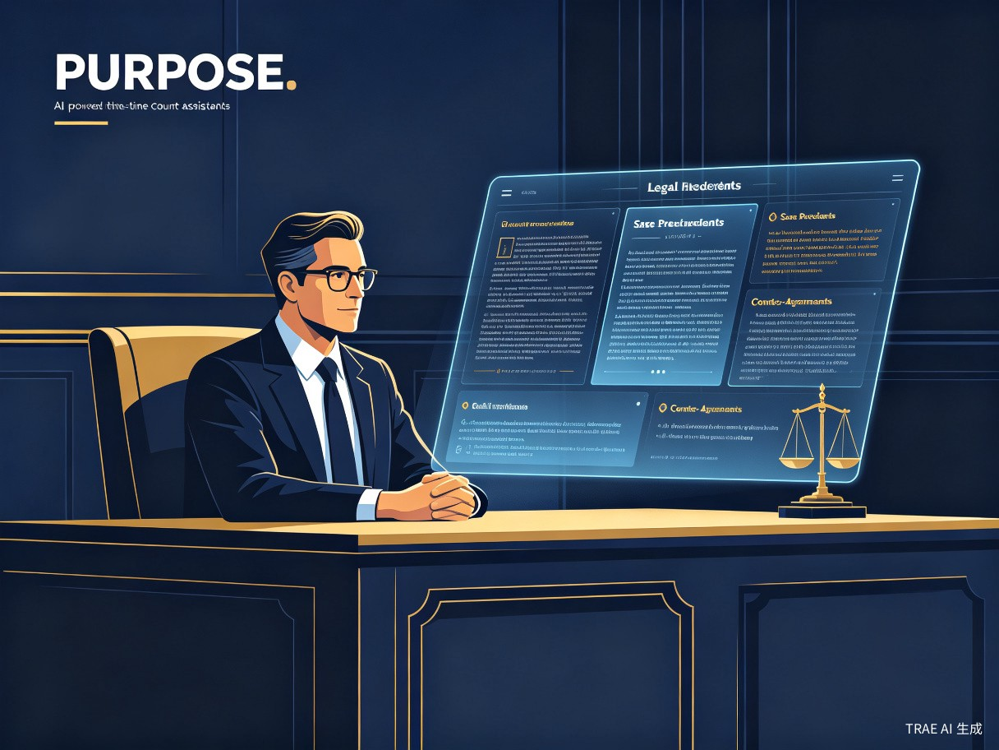
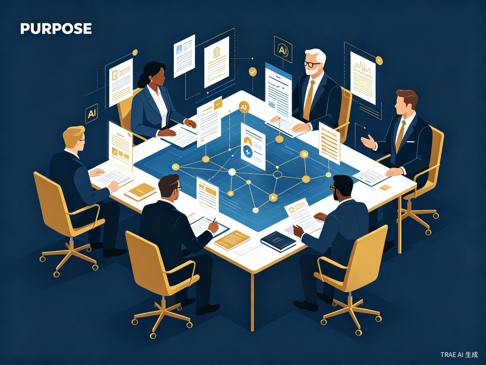

不是"加了AI的法律数据库"，而是AI原生SOP工作台。
AI不是外挂，是整个工作流的底层引擎。把资深律师的大脑"装进"系统，
让每一位律师都拥有随身携带的办案导航仪。
律师的大部分工作时间不是在"思考法律问题"，而是在"处理信息流"——读卷宗、查案例、对法条、写文书、做汇报。这些工作高度重复但又极其关键。
多个工具之间切换、流程靠脑记、经验靠个人积累。每个律师都在按自己的习惯摸索，没有统一标准。
资深律师在重复性事务上消耗大量精力，年轻律师承担大量基础工作但缺乏指引，不知道"下一步该做什么"。
庭审中的瞬息万变无法被事后检索覆盖，律师在法庭上面对突发情况时，缺少实时、精准的法律支持。

模法狮按照律师的实际办案节奏，将AI能力深度嵌入到每一步中。AI不是附加功能，而是产品的"操作系统"。

AI主动引导输入案情要素，自动生成类案裁判标尺，输出风险评估报告。
AI自动检索法官裁判倾向，预测争议焦点，推荐证据策略并生成庭审提纲。
庭审中AI通过语音识别实时捕捉对话，即时推送法条、类案论点、抗辩思路——你的"AI第二大脑"。
AI自动生成庭审要点摘要，对比事前预测做偏差分析，为上诉或结案提供数据支撑。

统一案件知识库、模板库、经验库，AI自动沉淀团队最佳实践，让律所的知识资产真正可复用、可传承
案件材料、类案报告、文书模板集中管理，告别散落在个人电脑和邮箱中的"知识孤岛"。
每一次办案，AI都在学习并沉淀最佳实践。团队的SOP流程会越来越接近"最优实践"。
新人按照AI引导的SOP就能独立推进案件，大幅缩短培养周期，降低出错率。

别人是"检索工具"，我们是"AI原生工作台"。别人帮你查得更快，我们帮你办得更好。
| 对比维度 | 传统法律产品（Alpha、威科先行等） | 模法狮 |
|---|---|---|
| 产品定位 | 检索工具 / 数据库 | AI原生SOP工作台 |
| AI角色 | 附加功能，做关键词扩展 | 底层引擎，驱动整个工作流 |
| 使用逻辑 | 你指挥工具，自己决定"什么时候用" | 工作台带着你前进，告诉你"接下来做什么" |
| 流程覆盖 | 单点功能，查到即结束 | 全流程覆盖：收案→庭前→庭审→庭后 |
| 庭审支持 | 无实时支持，事后检索 | 行业首创实时AI辅助，"AI第二大脑" |
| SOP与AI | 无SOP概念，或简单流程文档 | SOP与AI深度融合、互相增强的正循环 |
| 知识沉淀 | 依赖个人积累，无法传承 | AI自动沉淀团队最佳实践，可复用可传承 |
当前市面上的法律科技产品，AI基本停留在"智能检索"和"关键词匹配"层面。模法狮的底层逻辑完全不同：我们不是"在工具上加AI"，而是"以AI为引擎构建工作台"。从你打开模法狮的第一秒起，每一个功能、每一步引导、每一次推荐，都由AI驱动。
SOP为AI提供场景约束，AI不漫无目的地生成内容，而是基于当前SOP阶段做精准响应。AI的推理结果直接推动SOP向前演进。每一次办案，AI都在学习，SOP越来越贴合个人风格，团队SOP越来越接近"最优实践"。
行业首创的"AI第二大脑"：AI实时理解庭审对话，抓取关键法律要素，3秒内推送相关法条和抗辩思路。以静默推送方式辅助，律师余光扫一眼即可获取关键信息——这不仅是效率问题，更是"能否当场做出最优应对"的核心竞争力。
传统产品：提供功能，你自己想"什么时候用、怎么用、用完下一步做什么"。模法狮：AI引导的全流程工作台，告诉你"你现在处于什么阶段、接下来要做什么、需要准备什么材料"。我们不是在帮你做某一件事，而是在帮你"办完一个案子"。
将传统一个案件从收案到结案所需的20+小时信息处理工作，压缩到3小时以内
当前阶段聚焦B端法律从业者，后期逐步开放C端公众服务
缺乏标准化流程和团队支持，每个案子都从零开始，重复劳动多、效率低。
承担大量基础工作但缺乏指引，不知道"下一步该做什么"，容易遗漏或出错。
团队办案质量参差不齐，经验和知识沉淀在个人脑中，难以标准化复制。
商业价值、效率提升与社会价值的统一
全国执业律师超73万人，年增速超10%，法律科技市场正迎来爆发期。核心逻辑是深度绑定律师工作流——一旦习惯AI SOP办案方式，就再也回不到"散装"状态。营收方式：个人会员、律所团队版、按量付费、公众版增值服务。
类案检索从半天变15分钟，庭审提纲从半天变30分钟，文书草拟从一天变1小时。更重要的是，AI SOP确保每一步都有指引、有章可循——减少低级失误，让办案质量的下限大幅提升。
推动律师行业的专业化、标准化进程。让每一位律师——无论执业几年、无论在哪个城市——都能按照行业最佳实践来办案，缩小"好律师"和"普通律师"之间的经验鸿沟，让每一位当事人的合法权益都得到更充分的保障。